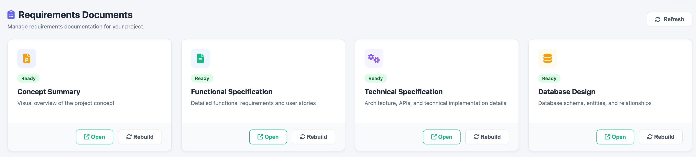
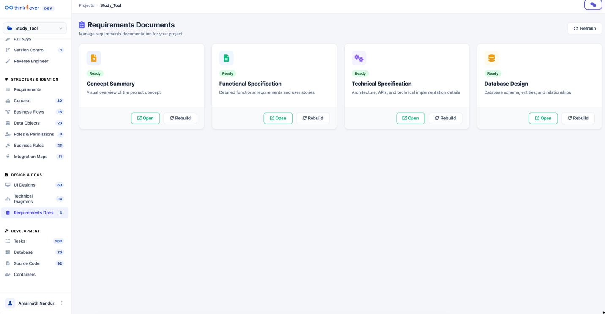
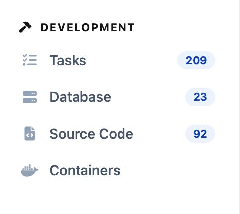

Requirements Docs
The Requirements Documents dashboard is the central repository for your project's formal specifications and documentation. This page allows you to manage, review, and regenerate key documents that define the project's scope, functionality, and technical framework.

Available Document Types
The dashboard organizes documentation into four primary categories, each serving a specific role in the project lifecycle:
| Document | Purpose | Key Content |
|---|---|---|
| Concept Summary | High-level project vision. | Visual overviews and core value propositions. |
| Functional Specification | User-facing behavior. | Detailed requirements, user stories, and feature logic. |
| Technical Specification | Developer-focused roadmap. | System architecture, API documentation, and implementation details. |
| Database Design | Data structure mapping. | Database schemas, entity relationships (ERD), and tables. |
Document Status & Management
Each document card features real-time status indicators and management tools:
- Ready Badge: A green "Ready" indicator confirms that the document has been successfully generated and is up to date with the latest project changes.
- Open: Click this button to view the full document in the built-in reader or to download a local copy.
- Rebuild: This action triggers the AI engine to scan your current project data—including diagrams, tasks, and code—to regenerate the document, ensuring it remains synchronized with your latest work.
- Refresh (Global): Use the refresh button at the top-right of the page to check for global status updates across all document types.
Key Workflow
- Generation: When you first start a project, use Rebuild to create your initial specifications from your concept sketches or technical diagrams.
- Verification: Check the Ready status before sharing documents with stakeholders to ensure they are finalized.
- Iteration: If you modify your Technical Diagrams or UI Designs, return here and click Rebuild on the corresponding document to keep your documentation in sync with your designs.

Development

The Development section is the technical engine of your project, providing direct access to the backend infrastructure, project management tasks, and the actual codebase. This section is designed for developers and engineers to manage the build and deployment phases of the project lifecycle.
There are 4 sub-menus:
1. Tasks
The project's central action log, containing all developmental "To-Dos," bug reports, and feature requests.
2. Database
Access to the data layer, including table structures, stored procedures, and data migration scripts.
3. Source Code
A repository for the application's logic, scripts, and front-end/back-end programming files.
4. Containers
Infrastructure management for deployment environments (e.g., Docker or Kubernetes configurations).